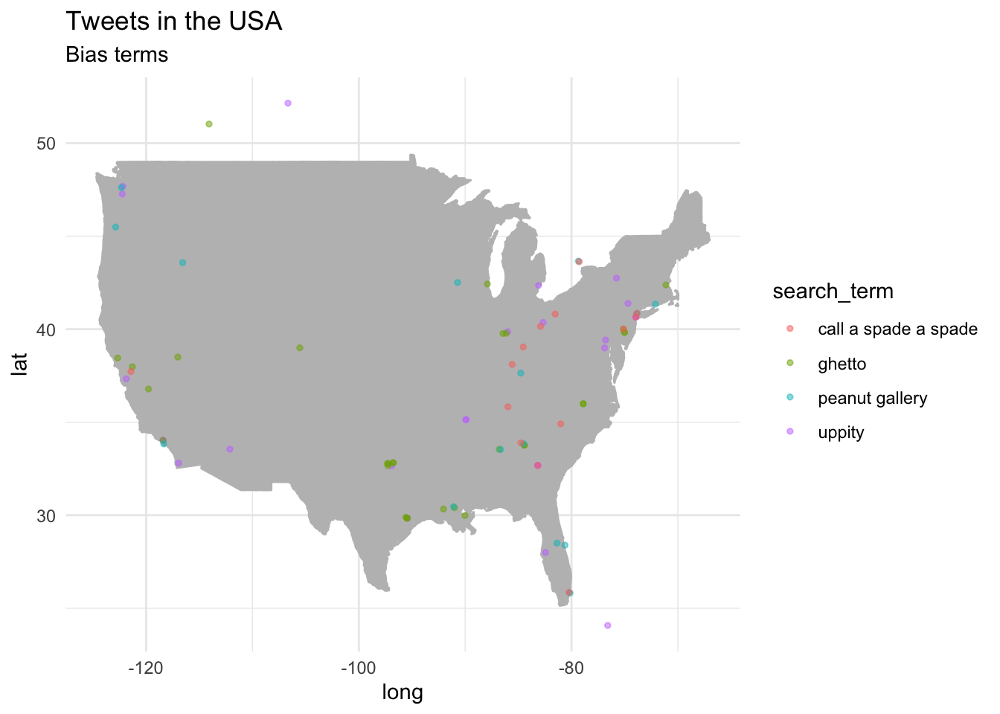

In this Recipe, we will dive into some R strategies that will increase your ability to produce effective, concise, and reproducible code. The three main areas we will cover are working with control statements, writing custom functions, and leveraging iteration. These programming strategies are often useful for acquiring data but, as we will see, they are powerful concepts that can be used throughout a reproducible research project.
To illustrate the usefulness of these R coding strategies I will provide two data collection cases: One using the rtweet pacakge to collect data from Twitter and the second using the rvest package to perform webscraping.
To get started let’s load the main packages we will work with in this recipe.
In this section I will discuss control statments, custom functions, and iteration providing general understanding of how each work to develop effective and efficient R coding practices.
In programming in general, and in R in particular, it is often the case that there will be points in the code in which the programmer will want to have the code make decisions on what to process (and what not to process) based on some state of the current code.
So when we want to make a choice point we need to frame that as an operation that returns a logical (TRUE/FALSE) output.
For example, let’s set a variable x to 1. An then ask R to evaluate x.
x <- 1 # set x to 1
x == 1 # evaluate x is equal to 1## [1] TRUE
x != 1 # evaluate x is not equal to 1## [1] FALSEThe same applies to character values.
y <- "Delwin" # set y to Delwin
y == "Delwin" # evaluate y is equal to Delwin## [1] TRUE
y != "Delwin" # evaluate y is not equal to Delwin## [1] FALSEAny operation that returns a logical value can be used. In the above example we used relational operators, but any function that returns a logical value can be used too.
There are a set of functions that come with the stringr package that allow us to evaluate character values in various ways. Let’s evaluate whether y starts with the letter “D.”
str_starts(y, "D") # evaluate y starts with D## [1] TRUE
str_starts(y, "J") # evaluate y starts with J## [1] FALSEWith functions that return logical values we can reverse the logical value by prefixing the function with !.
!str_starts(y, "J") # evaluate y starts with J, reversed## [1] TRUESo with this in mind we can control the code flow with the if() function. The most basic function to control code to execute or not, is to use the if() function. This function evaluates whether an operation returns TRUE or FALSE –if TRUE then the code executes, if not then it does not.
Let’s make a simple piece of code that returns a message if the character vector starts with “D.”
if (str_starts(y, "D")) {
# if evaluate y starts with J is TRUE
paste("This name starts with 'D'") # if true, print message
}## [1] "This name starts with 'D'"Inside the if() function itself we add the logical operation. Then we add opening and closing braces to tell the code what to execute if the logical operation returns TRUE.
In this case the code only runs if the vector element starts with “D.” But sometimes we want to execute some code if the if() operation returns FALSE. This is where the else condition comes in. Let’s change the value of y to “Judieth.”
y <- "Judeith" # set y to Judeith
if (str_starts(y, "D")) {
# if evaluate y starts with D is TRUE
paste("This name starts with 'D'") # if true, message
} else {
paste("This name does not start with 'D'") # if false, print message
}## [1] "This name does not start with 'D'"Note that the else condition opens and closes a new set of braces which wrap the alternative condition. This effectively makes our code more dynamic adjusting to the particular values of a given object.
Now if we would like to use the code above again in our code we could copy and paste it again where we need it. We may even adjust it so that we change the logical evaluation expression for a similar, but distinct situation. But ideally we would be able to reuse the code in a way that provides us similar functionality but with some flexibility. This is where writing a custom function comes in handy.
A custom function is simply a way to reuse code and make that code easily accessible. In it’s most basic form creating a custom function includes calling the function() function and assigning it to an object name. The code to be run by the function is wrapped in braces.
my_function <- function() {
# some code to run
}If the code we want to run inside our function depends on some variable or variables, we include them inside the function() function. The names of these variables are included in the code and the values they are assigned are passed on to the code. These variables are known as arguments.
my_function <- function(argument) {
paste(argument) # print message
}Now I can assign the value of argument in the my_function() function to anything I want and it will be reflected in the code that is run.
my_function(argument = "Hi") # print `argument`## [1] "Hi"
my_function(argument = "Hi Jerid") # print `argument`## [1] "Hi Jerid"A function can have no arguments or multiple arguments, as needed. Furthermore, the function’s arguments can have default values. Let’s rewrite the my_function() function to include two arguments, one of which will have a default value. I’m also going to make the argument names a bit more meaningful so that their use is more transparent and rename the function so that it too is more meaningful.
greetings <- function(greeting = "Hi", name) {
# Function: Print a greeting and name
paste(greeting, name) # print message
}
greetings(name = "Jerid") # print greeting to name## [1] "Hi Jerid"An argument with a default value is specified in the function creation itself. Since it has a default value it does not need to be specified in the use of that function. If, however, we want some other value other than the default, we need to assign the argument the new value.
greetings(greeting = "Hello", name = "Jerid") # print greeting to name## [1] "Hello Jerid"Let’s apply this knowledge of custom functions to the code from the if/else example in the previous section. Since this will be a function we will want to be used in similar situation, but still have some flexibility we look to what we would like to maintain in the code and what aspects we would like to have depend on values we pass to the function. I think it makes sense to have the name and the letter be arguments. I’ll set the letter argument to default to “D.”
name_starts_with <- function(name, letter = "D") {
# Function: Evaluates if the name starts with the given letter
if (str_starts(name, letter)) {
# if evaluate name starts with letter
paste(name, "starts with", letter) # if true, print message
} else {
paste(name, "does not start with", letter) # if false, print message
}
}
name_starts_with(name = "Jerid") # name starts with D message## [1] "Jerid does not start with D"
name_starts_with(name = "Jerid", letter = "J") # name starts with J message## [1] "Jerid starts with J"Note that I’ve added the argument name to the message in the paste() function.
There are two more points to consider when creating and using custom functions in your code projects. First, if you plan to use this function in distinct parts of your project, that is in distinct R scripts or R Markdown documents, you will want to add this function to a separate R script and then source the script inside of your code to make the function accessible.
Let me unpack this a bit. If you notice when you create the custom function, you must run the custom function itself to make it accessible in your code. It will then appear in your ‘Environment’ pane in RStudio under the subsection ‘Functions.’ The objects (and functions) in the ‘Environment’ pane are session-specific, that is if you restart R, the ‘Environment’ is cleared. To be able to access this function anywhere you want, create an new R script (.R) and copy the function into this script. I will often create a directory specifically for files with functions.
functions/
└── functions.RThen we use the source() function to run this function.R script, which only contains functions, effectively adding the functions stored there to our current R session. Note that the relative path to the functions.R file is the only argument to source().
source("../functions/functions.R")It is a point of personal preference whether you create individual R scripts for each custom function you create, or if you group multiple functions into one R script.
Second, if we invoke a function from a package, say the stringr package in this case, it is important that that package is either loaded before the function is run or that the reference to the function is made explicit (with the :: convention). If you use various functions from a package, it is worthwhile to load the package with library() at the beginning of your custom function.
name_starts_with <- function(name, letter = "D") {
# Function: Evaluates if the name starts with the given letter
library(stringr) # to detect first letter
if (stringr::str_starts(name, letter)) {
# if evaluate name starts with letter
paste(name, "starts with", letter) # if true, print message
} else {
paste(name, "does not start with", letter) # if false, print message
}
}Alternatively, you can use the :: convention to avoid loading the entire package.
name_starts_with <- function(name, letter = "D") {
# Function: Evaluates if the name starts with the given letter
if (stringr::str_starts(name, letter)) {
# if evaluate name starts with letter
paste(name, "starts with", letter) # if true, print message
} else {
paste(name, "does not start with", letter) # if false, print message
}
}So at this point we’ve seen how to control the flow of our code with control statements and explored how to reuse code in an efficient way by creating and using custom functions. The final coding strategy in the recipe concerns passing multiple arguments to the same function and having the function deal with each argument in turn and return the results from each together. This is known as iteration.
Say we want to use our name_starts_with() function and pass multiple names to this function. One way to do this is to simply apply the function multiple times with a new name.
name_starts_with(name = "Dawn")## [1] "Dawn starts with D"
name_starts_with(name = "Vince")## [1] "Vince does not start with D"
name_starts_with(name = "Stephanie")## [1] "Stephanie does not start with D"This, however, is not ideal. If we are working with many values the code will become cumbersome. To be able to apply our custom function to many values at the same time, we turn to the map() function from the purrr package.
First let’s some names to work with. The babynames dataset from the babynames package will help us out here. I’ll do a random sample of 10 names from this dataset and only keep the name column.
Use `?babynames::babynames to find out more about this dataset.
library(babynames) # for the babynames dataset
set.seed(1111) # make the random sample reproducible
sample_names <-
babynames %>% # dataset
slice_sample(n = 10) %>% # randomly sample 10 names
pull(name) # isolate the `name` vector
sample_names## [1] "Macey" "Tausha" "Merlin" "Vernel" "Dontez" "Nallely" "Anna"
## [8] "Hogan" "Manola" "Jakalyn"Let’s start by seeing what happens if we pass the names in the sample_names vector to our function name_starts_with().
sample_names %>%
name_starts_with()## Warning in if (str_starts(name, letter)) {: the condition has length > 1 and
## only the first element will be used## [1] "Macey does not start with D" "Tausha does not start with D"
## [3] "Merlin does not start with D" "Vernel does not start with D"
## [5] "Dontez does not start with D" "Nallely does not start with D"
## [7] "Anna does not start with D" "Hogan does not start with D"
## [9] "Manola does not start with D" "Jakalyn does not start with D"We see there is a warning triggered but at first glance it still seems that our function worked. Take a closer look, however, and we see that the name “Dontez” gets the message “does not start with D” –which is clearly not the case. What has happened is that our if-else statements does not allow for multiple values to be passed to it and it just accepts the first value, in this case ‘Macey’ –which does not start with ‘D.’ We can see this clearly by changing the letter to evaluate to ‘M,’ as ‘Macey’ was the first value.
sample_names %>%
name_starts_with(letter = "M")## Warning in if (str_starts(name, letter)) {: the condition has length > 1 and
## only the first element will be used## [1] "Macey starts with M" "Tausha starts with M" "Merlin starts with M"
## [4] "Vernel starts with M" "Dontez starts with M" "Nallely starts with M"
## [7] "Anna starts with M" "Hogan starts with M" "Manola starts with M"
## [10] "Jakalyn starts with M"Same warning and now all of the messages claim that the names start with ‘M.’
The map() function allows us to pass multiple values to the same function and each value is run on the function and then the results are returned together.
## [[1]]
## [1] "Macey does not start with D"
##
## [[2]]
## [1] "Tausha does not start with D"
##
## [[3]]
## [1] "Merlin does not start with D"
##
## [[4]]
## [1] "Vernel does not start with D"
##
## [[5]]
## [1] "Dontez starts with D"
##
## [[6]]
## [1] "Nallely does not start with D"
##
## [[7]]
## [1] "Anna does not start with D"
##
## [[8]]
## [1] "Hogan does not start with D"
##
## [[9]]
## [1] "Manola does not start with D"
##
## [[10]]
## [1] "Jakalyn does not start with D"Now we get the correct output, but the results of map() by default return a list. We would like the results to be a character vector, just like the character vector that we passed to the function. There are various map_*() functions that specifiy what the type of object that should be returned is. In this case we want map_chr() to give us a single character vector.
## [1] "Macey does not start with D" "Tausha does not start with D"
## [3] "Merlin does not start with D" "Vernel does not start with D"
## [5] "Dontez starts with D" "Nallely does not start with D"
## [7] "Anna does not start with D" "Hogan does not start with D"
## [9] "Manola does not start with D" "Jakalyn does not start with D"Our name_starts_with() function has another possible argument, the letter argument. To specify a new value for that argument, we can add it to the map() call. Note, however, that each argument-value pair will need to be separated by a comma.
## [1] "Macey starts with M" "Tausha does not start with M"
## [3] "Merlin starts with M" "Vernel does not start with M"
## [5] "Dontez does not start with M" "Nallely does not start with M"
## [7] "Anna does not start with M" "Hogan does not start with M"
## [9] "Manola starts with M" "Jakalyn does not start with M"The examples of control statements, custom functions, and iteration above were hopefully helpful to illustrate their use, but they are admittedly basic. To ground these coding strategies for acquiring text data, let’s turn to working with more realistic cases.
The rtweet package has a wide range of functions which allow for access to the Twitter API. A very useful function is the search_tweets() function which allows access to a sample of Twitter posts within the recent past based on a search query.
For more options use ?rtweet::search_tweets to explore the documentation.
In this test case we are going to aim to collect tweets for various search query terms one at a time and then compile the results into one data frame.
First let’s set up our basic function to meet our aims to get started. Here I’ve used the query term ‘uppity,’ and set the function to retrieve approximately 100 tweets matching the term and the type of tweet is set to recent. I’ve chosen to avoid retweets and set the geographic boundary to be The United States. I’ve also set the Twitter API token that I’m using to authenticate this search.
tweets <-
search_tweets(q = "uppity", # query term
n = 100, # number of desired tweets
include_rts = FALSE, # no retweets
geocode = lookup_coords("usa"), # only from US
token = student_token) %>% # token for authentication
lat_lng() # extract the geocoordinates where availableThis query returns the following set of information.
glimpse(tweets)## Rows: 100
## Columns: 92
## $ user_id <chr> "23026359", "1188738173553143808", "1086823670…
## $ status_id <chr> "1465006240258531340", "1465005923693301762", …
## $ created_at <dttm> 2021-11-28 17:14:40, 2021-11-28 17:13:25, 202…
## $ screen_name <chr> "SweetfaceK", "greg7190", "HowCamJokes", "HowC…
## $ text <chr> "I’m cool as hell, that uppity stuck up shit d…
## $ source <chr> "Twitter for iPhone", "Twitter Web App", "Twit…
## $ display_text_width <dbl> 99, 275, 76, 91, 239, 55, 68, 67, 69, 268, 267…
## $ reply_to_status_id <chr> NA, "1464653307620831247", "146498680641232487…
## $ reply_to_user_id <chr> NA, "3308947525", "1009577803304656896", NA, "…
## $ reply_to_screen_name <chr> NA, "FrDarinSchmidt", "itsJeffTiedrich", NA, "…
## $ is_quote <lgl> FALSE, FALSE, FALSE, FALSE, FALSE, FALSE, TRUE…
## $ is_retweet <lgl> FALSE, FALSE, FALSE, FALSE, FALSE, FALSE, FALS…
## $ favorite_count <int> 0, 0, 2, 1, 0, 1, 11, 18, 4, 1, 0, 0, 0, 3, 0,…
## $ retweet_count <int> 0, 0, 0, 0, 0, 0, 4, 3, 0, 0, 0, 0, 0, 1, 0, 0…
## $ quote_count <int> NA, NA, NA, NA, NA, NA, NA, NA, NA, NA, NA, NA…
## $ reply_count <int> NA, NA, NA, NA, NA, NA, NA, NA, NA, NA, NA, NA…
## $ hashtags <list> NA, NA, NA, NA, NA, NA, NA, NA, NA, NA, NA, N…
## $ symbols <list> NA, NA, NA, NA, NA, NA, NA, NA, NA, NA, NA, N…
## $ urls_url <list> NA, NA, NA, NA, NA, NA, "twitter.com/newsweek…
## $ urls_t.co <list> NA, NA, NA, NA, NA, NA, "https://t.co/ejEGkiI…
## $ urls_expanded_url <list> NA, NA, NA, NA, NA, NA, "https://twitter.com/…
## $ media_url <list> NA, NA, NA, NA, NA, NA, NA, NA, NA, NA, NA, N…
## $ media_t.co <list> NA, NA, NA, NA, NA, NA, NA, NA, NA, NA, NA, N…
## $ media_expanded_url <list> NA, NA, NA, NA, NA, NA, NA, NA, NA, NA, NA, N…
## $ media_type <list> NA, NA, NA, NA, NA, NA, NA, NA, NA, NA, NA, N…
## $ ext_media_url <list> NA, NA, NA, NA, NA, NA, NA, NA, NA, NA, NA, N…
## $ ext_media_t.co <list> NA, NA, NA, NA, NA, NA, NA, NA, NA, NA, NA, N…
## $ ext_media_expanded_url <list> NA, NA, NA, NA, NA, NA, NA, NA, NA, NA, NA, N…
## $ ext_media_type <chr> NA, NA, NA, NA, NA, NA, NA, NA, NA, NA, NA, NA…
## $ mentions_user_id <list> NA, <"3308947525", "3092121514">, "1009577803…
## $ mentions_screen_name <list> NA, <"FrDarinSchmidt", "AngelaRasmussen">, "i…
## $ lang <chr> "en", "en", "en", "en", "en", "en", "en", "en"…
## $ quoted_status_id <chr> NA, NA, NA, NA, NA, NA, "1464946026171797510",…
## $ quoted_text <chr> NA, NA, NA, NA, NA, NA, "Kamala Harris spent h…
## $ quoted_created_at <dttm> NA, NA, NA, NA, NA, NA, 2021-11-28 13:15:24, …
## $ quoted_source <chr> NA, NA, NA, NA, NA, NA, "Echobox", "Sprout Soc…
## $ quoted_favorite_count <int> NA, NA, NA, NA, NA, NA, 58, 1587, NA, NA, NA, …
## $ quoted_retweet_count <int> NA, NA, NA, NA, NA, NA, 10, 509, NA, NA, NA, N…
## $ quoted_user_id <chr> NA, NA, NA, NA, NA, NA, "2884771", "11134252",…
## $ quoted_screen_name <chr> NA, NA, NA, NA, NA, NA, "Newsweek", "GOP", NA,…
## $ quoted_name <chr> NA, NA, NA, NA, NA, NA, "Newsweek", "GOP", NA,…
## $ quoted_followers_count <int> NA, NA, NA, NA, NA, NA, 3460242, 2762940, NA, …
## $ quoted_friends_count <int> NA, NA, NA, NA, NA, NA, 544, 1619, NA, NA, NA,…
## $ quoted_statuses_count <int> NA, NA, NA, NA, NA, NA, 289191, 47126, NA, NA,…
## $ quoted_location <chr> NA, NA, NA, NA, NA, NA, "New York, NY", "", NA…
## $ quoted_description <chr> NA, NA, NA, NA, NA, NA, "The freedom to disagr…
## $ quoted_verified <lgl> NA, NA, NA, NA, NA, NA, TRUE, TRUE, NA, NA, NA…
## $ retweet_status_id <chr> NA, NA, NA, NA, NA, NA, NA, NA, NA, NA, NA, NA…
## $ retweet_text <chr> NA, NA, NA, NA, NA, NA, NA, NA, NA, NA, NA, NA…
## $ retweet_created_at <dttm> NA, NA, NA, NA, NA, NA, NA, NA, NA, NA, NA, N…
## $ retweet_source <chr> NA, NA, NA, NA, NA, NA, NA, NA, NA, NA, NA, NA…
## $ retweet_favorite_count <int> NA, NA, NA, NA, NA, NA, NA, NA, NA, NA, NA, NA…
## $ retweet_retweet_count <int> NA, NA, NA, NA, NA, NA, NA, NA, NA, NA, NA, NA…
## $ retweet_user_id <chr> NA, NA, NA, NA, NA, NA, NA, NA, NA, NA, NA, NA…
## $ retweet_screen_name <chr> NA, NA, NA, NA, NA, NA, NA, NA, NA, NA, NA, NA…
## $ retweet_name <chr> NA, NA, NA, NA, NA, NA, NA, NA, NA, NA, NA, NA…
## $ retweet_followers_count <int> NA, NA, NA, NA, NA, NA, NA, NA, NA, NA, NA, NA…
## $ retweet_friends_count <int> NA, NA, NA, NA, NA, NA, NA, NA, NA, NA, NA, NA…
## $ retweet_statuses_count <int> NA, NA, NA, NA, NA, NA, NA, NA, NA, NA, NA, NA…
## $ retweet_location <chr> NA, NA, NA, NA, NA, NA, NA, NA, NA, NA, NA, NA…
## $ retweet_description <chr> NA, NA, NA, NA, NA, NA, NA, NA, NA, NA, NA, NA…
## $ retweet_verified <lgl> NA, NA, NA, NA, NA, NA, NA, NA, NA, NA, NA, NA…
## $ place_url <chr> NA, NA, "https://api.twitter.com/1.1/geo/id/87…
## $ place_name <chr> NA, NA, "Westland", "Westland", NA, NA, NA, NA…
## $ place_full_name <chr> NA, NA, "Westland, MI", "Westland, MI", NA, NA…
## $ place_type <chr> NA, NA, "city", "city", NA, NA, NA, NA, NA, NA…
## $ country <chr> NA, NA, "United States", "United States", NA, …
## $ country_code <chr> NA, NA, "US", "US", NA, NA, NA, NA, NA, NA, NA…
## $ geo_coords <list> <NA, NA>, <NA, NA>, <NA, NA>, <NA, NA>, <NA, …
## $ coords_coords <list> <NA, NA>, <NA, NA>, <NA, NA>, <NA, NA>, <NA, …
## $ bbox_coords <list> <NA, NA, NA, NA, NA, NA, NA, NA>, <NA, NA, NA…
## $ status_url <chr> "https://twitter.com/SweetfaceK/status/1465006…
## $ name <chr> "Janet Jackass\u2728", "Greg7190", "𝕋𝕨𝕠 𝕊𝕙𝕖𝕕𝕤 …
## $ location <chr> "Chicago, IL", "Australia", "[Tweeting Jokes F…
## $ description <chr> "An acquired taste.. so sip slow. she/that/bit…
## $ url <chr> "https://t.co/Af8e6Sg46u", NA, NA, NA, NA, "ht…
## $ protected <lgl> FALSE, FALSE, FALSE, FALSE, FALSE, FALSE, FALS…
## $ followers_count <int> 12761, 48, 3686, 3686, 1651, 394, 16928, 16928…
## $ friends_count <int> 1440, 186, 3353, 3353, 2398, 365, 16742, 16742…
## $ listed_count <int> 29, 1, 28, 28, 18, 0, 12, 12, 471, 3, 0, 0, 0,…
## $ statuses_count <int> 305094, 4232, 34563, 34563, 89599, 23872, 4733…
## $ favourites_count <int> 64659, 9022, 13338, 13338, 396777, 25401, 1104…
## $ account_created_at <dttm> 2009-03-06 03:48:35, 2019-10-28 08:44:10, 201…
## $ verified <lgl> FALSE, FALSE, FALSE, FALSE, FALSE, FALSE, FALS…
## $ profile_url <chr> "https://t.co/Af8e6Sg46u", NA, NA, NA, NA, "ht…
## $ profile_expanded_url <chr> "https://instagram.com/sweetface_luxe?utm_medi…
## $ account_lang <lgl> NA, NA, NA, NA, NA, NA, NA, NA, NA, NA, NA, NA…
## $ profile_banner_url <chr> "https://pbs.twimg.com/profile_banners/2302635…
## $ profile_background_url <chr> "http://abs.twimg.com/images/themes/theme10/bg…
## $ profile_image_url <chr> "http://pbs.twimg.com/profile_images/146077102…
## $ lat <dbl> NA, NA, 42.3, 42.3, NA, NA, NA, NA, NA, NA, NA…
## $ lng <dbl> NA, NA, -83.4, -83.4, NA, NA, NA, NA, NA, NA, …OK. Since we are going to want to pass various terms/ expressions to this function we will also want to make sure that the search query is added to the structure of the data frame. We do this by creating a variable to pass to the q argument and then add a column to the data frame with mutate().
search_term <- "uppity" # create a search_term variable
tweets <-
search_tweets(q = search_term, # query term (from search_term)
n = 100, # number of desired tweets
include_rts = FALSE, # no retweets
geocode = lookup_coords("usa"), # only from US
token = student_token) %>% # token for authentication
lat_lng() %>% # extract the geocoordinates where available
mutate(search_term = search_term) # add search_term value to the data frameNow we can replace the value of search_term and run the search again, if we wanted, and the search term would be added to the new column search_term in the resulting data frame. But let’s go one step further and create a custom function which makes it easy for us to run the search replacing the search_term. In addition, I will add a variable placeholder for n in the custom function which we can change as needed.
term_search <-
function(search_term, n = 100) {
# Function:
# Search recent tweets for specific term
library(rtweet) # to search Twitter API
tweets <-
search_tweets(q = sQuote(search_term), # query term (from search_term)
n = n, # number of desired tweets (from n)
include_rts = FALSE, # no retweets
geocode = lookup_coords("usa"), # only from US
token = student_token) %>% # token for authentication
lat_lng() %>% # extract the geocoordinates where available
mutate(search_term = search_term) # add search_term value to the data frame
return(tweets) # return the results
}Note that I’ve added sQuote() around the search_term in the search_tweet function to make sure that multiword terms are quoted with single quotes 'term expression'. This tells the function to search for the whole phrase not just individual words.
As is the term_search() function is pretty useful and makes searching along the parameters we have set easy to do. But we want to search multiple terms/ expressions at the same time and return them together.
Here are the search terms I’ve selected in a vector called bias_terms.
# Biased language Source:
# https://blog.ongig.com/diversity-and-inclusion/biased-language-examples/
bias_terms <- c("uppity", "ghetto", "peanut gallery", "call a spade a spade")Now we can employ the map() function from the purrr package to pass each term to our custom function term_search. I’ve set n to 500, overriding the default of 100.
results <-
bias_terms %>% # terms to search
map(term_search, n = 500) %>% # apply the function to each term, retrieve 500 tweets (if available)
do_call_rbind() %>% # join the results by rows
return() # return the resultsLet’s take a look at how many tweets we obtained for each of the search terms.
| search_term | n |
|---|---|
| call a spade a spade | 500 |
| ghetto | 500 |
| uppity | 499 |
| peanut gallery | 273 |
Notice we obtained 500 matching tweets for all the terms except ‘peanut gallery.’ This underscores that we are not guaranteed to get exactly the number of tweets requested at any given time.
Let’s save these results to disk using the save_as_csv() function from rtweet.
save_as_csv(results, file_name = "../data/original/twitter/bias_terms.csv")In a reproducible research project we may want to make sure that we don’t overwrite the results of our Twitter query each time we run this script as the result will be distinct. We can use a control statement to avoid conducting a new search, unless it is desired to do so.
conduct_search <- FALSE # set to TRUE to conduct a new search
if(conduct_search) {
cat("Conducting new search. \n")
bias_terms <- c("uppity", "ghetto", "peanut gallery", "call a spade a spade")
bias_terms %>% # terms to search
map(term_search, n = 500) %>% # apply the function to each term, retrieve 500 tweets (if available)
do_call_rbind() %>% # join the results by rows
save_as_csv(file_name = "../data/original/twitter/bias_terms.csv")
cat("Search results saved to disk. \n")
} else {
cat("Keeping previous search results. \n")
}Just for fun, let’s map these tweets and color the points on the map according to the specific bias term. We get the geocoordinates from the lat and lng variables extracted by the lat_lng() function.
states_map <- map_data("state") # from ggplot2
p <- ggplot() + geom_polygon(data = states_map, aes(x = long, y = lat, group = group),
fill = "grey", color = "black") + labs(title = "Tweets in the USA", subtitle = "Bias terms")
p + geom_point(data = results, aes(x = lng, y = lat, group = 1, color = search_term),
alpha = 1/2, size = 1.5)
Under development
search_url <- "https://www.msnbc.com/search/?q=latinx#gsc.tab=0&gsc.q=latinx%20opinion&gsc.sort=date"
search_url <- "https://www.msnbc.com/opinion/biden-reversing-trump-s-discriminatory-housing-rulings-we-need-more-n1276857"
search_html <- read_html(search_url)
search_html %>%
html_elements("div.article-body__content") %>%
html_text()
url <- "http://www.chakoteya.net/DoctorWho/episodes13.html"
html <- read_html(url)
html %>%
html_elements("a") %>%
html_attr("href") %>%
# pluck() %>%
str_extract(pattern = "^\\d.*.html$")
main_url <- "http://www.chakoteya.net/DoctorWho/"
html <- read_html(main_url)
html %>%
html_elements("a") %>%
html_attr("href")
url <- "https://www.nytimes.com/2021/09/21/opinion/gender-pronouns-they.html"
html <- read_html(url)
htmlIn this recipe we have taken a closer look at some key programming strategies that are applicable to acquiring data, but also for many other parts of a text analysis project. These strategies allow the programmer to control the code flow, create reusable custom functions and iterate programming tasks. Together these strategies will make your more concise, efficient, and effective.
In the next recipe we will turn to curating data. That is, the process of taking data or a dataset and manipulating it’s structure such that it conforms to tidy data principles.